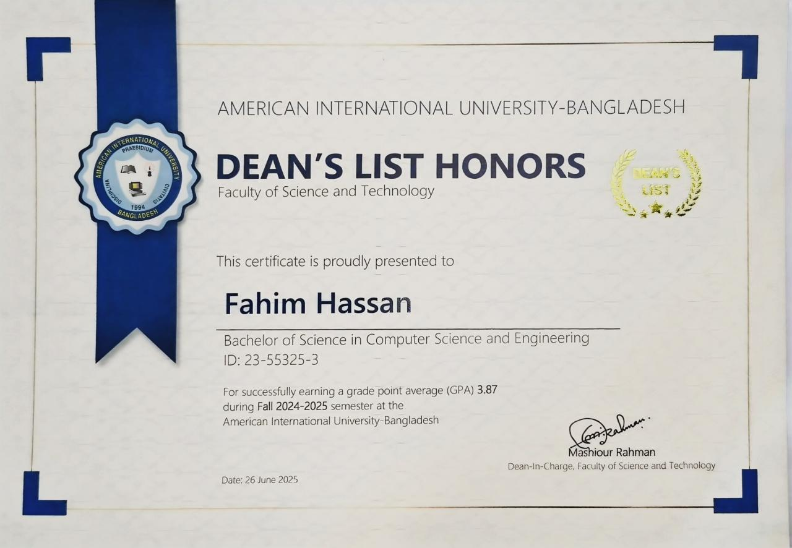

Academic Excellence
Dean’s List Honors
I received Dean’s List Honors from AIUB after achieving a GPA of 3.87 in the Fall 2024–2025 semester. The recognition reflects consistent academic performance and dedication to my studies.